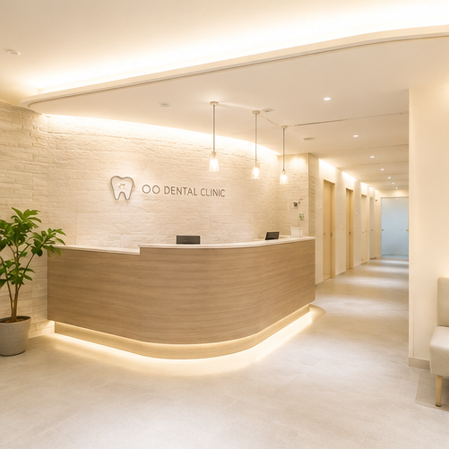
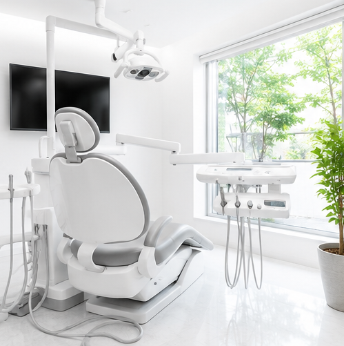
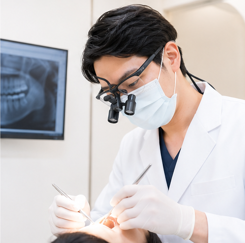
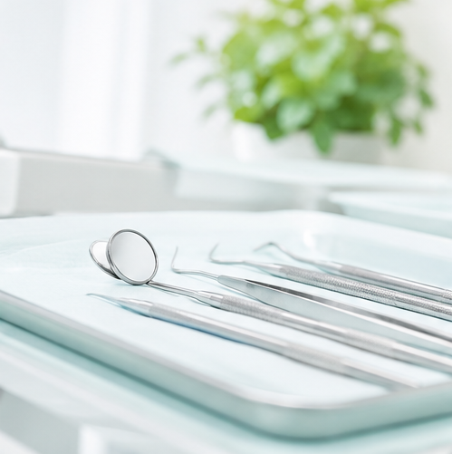
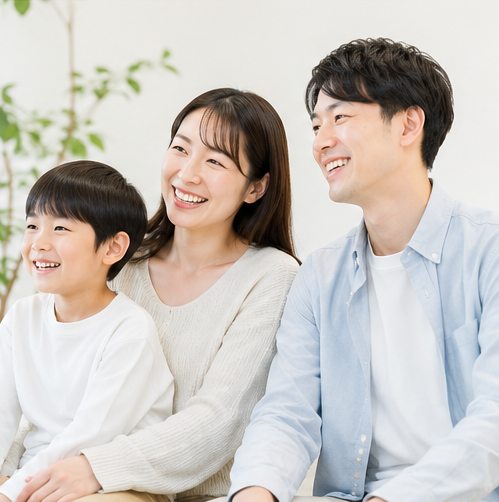

予防歯科
むし歯や歯周病のリスクを見つけ、定期的なクリーニングとセルフケアの見直しを行います。

治療して終わりではなく、良い状態を保つための定期ケアを重視します。
お子さまから大人の方まで、通院の不安を減らす説明と環境を整えます。
口腔内の状態を確認し、治療方針をわかりやすく共有します。
About
OO DENTAL CLINICは、患者さまが自分の歯を長く使い続けられるよう、予防・治療・メンテナンスを一つの流れとして考える歯科医院です。
診療では、現在の状態と選択肢をきちんとお伝えし、無理のない計画をご相談しながら進めます。小さな違和感や、久しぶりの通院も気軽にご相談ください。
Services
むし歯や歯周病のリスクを見つけ、定期的なクリーニングとセルフケアの見直しを行います。
痛みや違和感に対して、原因を確認しながら歯をできるだけ守る治療を検討します。
お子さまの成長に合わせて、通院に慣れることから予防習慣づくりまで支えます。
見た目の美しさだけでなく、噛み合わせや清掃性も考慮した治療をご提案します。
口元の印象を整えたい方へ、歯の状態に合わせて無理のない方法をご案内します。
治療前の検査とカウンセリングで、状態・期間・費用の見通しを共有します。
Clinic

自然光が入る明るい空間で、緊張しやすい診療時間もできるだけ穏やかに過ごせるよう配慮します。

治療前にお口の状態を確認し、必要な処置と優先順位を整理します。

器具や診療スペースの清潔さを保ち、安心して診療を受けられる環境づくりを行います。

For Family
年齢や生活リズムによって、必要なケアは変わります。お子さまの予防、働く方の短時間相談、親子での定期検診など、通いやすい形を一緒に考えます。
家族での相談を予約するFirst Visit
症状やご希望をうかがい、必要に応じて当日の流れをご案内します。
お口の状態を確認し、治療が必要な箇所と予防のポイントを共有します。
痛みや不安に配慮しながら、相談した計画に沿って進めます。
治療後も良い状態を保てるよう、定期的な確認とクリーニングを行います。